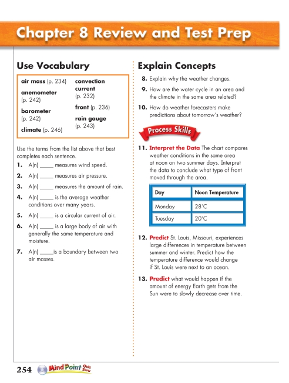
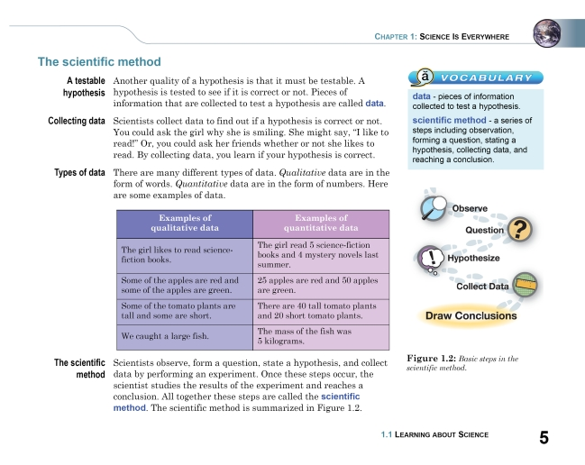

Part II(d): Tables
Part II(d): Tables
DAISY 3 Structure Guidelines
Last Revised: June 4, 2008
This section of the guidelines explain the elements used to mark up straightforward tables. For information on tagging more complex tabular material, see the "Tables" section of the DTBook DTD, the XHMTL1.1 specification, from which the table model is drawn, or applicable reference works.
Information Object: Tables
Definition
A table is an arrangement of data with two or more columns and one or more rows in which the information in the leftmost column relates specifically to the information in the other column or columns. The format of a table may vary depending on the project style. A table usually has column headings and may or may not have a title.
Tables normally read across from left to right, that is, information in the right columns relates horizontally to the information in the left columns.
Bibliographic Reference
Markup
Tables are marked up using the <table> element in combination with the <caption>, <thead> (header), optional <tbody> (main body of table), <tr> (table row), <th> (cell containing header information), and <td> (cell containing table data) elements. The <tfoot> tag can be used to add footer information. In addition, <col> defines the alignment properties for cells in one or more columns and <colgroup> groups adjacent columns that are semantically related.
The <table> tags surround the entire table. Certain optional elements, if used, must follow in this sequence: <caption>, either <col> or <colgroup>, <thead>, and <tfoot>. Any or all of these elements may be used. The content of the table, in the tbody element, follows. In simple tables, <tr>s mark each row of table data cells (<td>). In tables consisting of multiple sections, <tbody> marks each section and contains one or more rows (<tr>).
The <thead> and <tfoot> elements contain table header and footer information, respectively, in rows <tr> of cells (usually <th> which distinguishes table information from table data). Each, if used, may be used only once, and applies to all <tbody>s of the table. For a multiple-page print table, the browser or playback device may choose to repeat <thead> and <tfoot> on each page; therefore, they should not be redundantly tagged.
Note that the content model of the table element used in DTBook differs from the content model described in XHTML 1.1
A long table spanning several pages of the print book should have separate <pagenum> values for each of the pages on which the table appears. A <prodnote> explaining that the table spans several pages should be added prior to the table.
New in DTBook-2005-3: <pagenum>s may now be included within <table>, before or after <tr> elements.
Syntax
<table>
<caption>...</caption>
<col>...</col>
<colgroup>...</colgroup>
<thead>...</thead>
<tfoot>...</tfoot>
<tbody>...</tbody>
<tr>
<th>...</th>
<td>...</td>
</tr>
<pagenum>...</pagenum>
</table>
Examples
Example 1
This is a very simple table with no caption, footer, or <tbody>:
<table border="1">
<thead>
<tr>
<th>Parent Company</th>
<th>Divested Business</th>
</tr>
</thead>
<tr>
<td>U.S. Sprint</td>
<td>Cellular phone</td>
</tr>
<tr>
<td>Union Pacific</td>
<td>Oil, gas</td>
</tr>
<tr>
<td>Viacom</td>
<td>Cable TV</td>
</tr>
</table>
This table would be rendered as:
| Parent Company |
Divested Business |
| U.S. Sprint |
Cellular phone |
| Union Pacific |
Oil, gas |
| Viacom |
Cable TV |
Example 2
<table border="1">
<caption>This table contains both a header and a footer.</caption>
<thead>
<tr>
<th>Number</th>
<th>A</th>
<th>B</th>
<th>C</th>
</tr>
</thead>
<tfoot>
<tr>
<th>Footer Number</th>
<th>Footer A</th>
<th>Footer B</th>
<th>Footer C</th>
</tr>
</tfoot>
<tbody>
<tr>
<td>1</td>
<td>A1</td>
<td>B1</td>
<td>C1</td>
</tr>
<tr>
<td>2</td>
<td>A2</td>
<td>B2</td>
<td>C2</td>
</tr>
<tr>
<td>3</td>
<td>A3</td>
<td>B3</td>
<td>C3</td>
</tr>
</tbody>
</table>
This table would be rendered as:
This table contains both a header and a footer.
| Number |
A |
B |
C |
| Footer Number |
Footer A |
Footer B |
Footer C |
| 1 |
A 1 |
B 1 |
C 1 |
| 2 |
A 2 |
B 2 |
C 2 |
| 3 |
A 3 |
B 3 |
C 3 |
Example 3
This example shows how a table that spans three pages can be set up. Page numbers appear between table rows.
<pagenum id="pg255" page="normal">255</pagenum>
<prodnote render="required">The following table spans pages 255 to 257. Text.</prodnote>
<table>
<caption>This table contains a header.</caption>
<thead>
<tr> <th><!-- ... --></th> </tr>
</thead>
<tbody>
<tr> <td><!-- ... --></td> </tr>
<tr> <td><!-- ... --></td> </tr>
<pagenum id="pg256" page="normal">256</pagenum>
<tr> <td><!-- ... --></td> </tr>
<tr> <td><!-- ... --></td> </tr>
<pagenum id="pg257" page="normal">257</pagenum>
<tr> <td><!-- ... --></td> </tr>
<tr> <td><!-- ... --></td> </tr>
</tbody>
</table>
Illustrated Example 1
Page Sample:
(Show/Hide)

Page 254 from Science (0-328-34506-2) by Pearson Scott Foresman
Sample Code:
(Show/Hide)
<level3>
<pagenum id="IDAN1NN">254</pagenum>
<h3>Chapter 8 Review and Test Prep</h3>
<level4>
<h4>Use Vocabulary</h4>
<list type="pl">
<li><strong>air mass</strong> (p. 234)</li>
<li><strong>anemometer</strong> (p. 242)</li>
<li><strong>barometer</strong> (p. 242)</li>
<li><strong>climate</strong> (p. 246)</li>
<li><strong>convection current</strong> (p. 232)</li>
<li><strong>front</strong> (p. 236)</li>
<li><strong>rain gauge</strong> (p. 243)</li>
</list>
<p>Use the terms from the list above that best completes each
sentence.</p>
<list type="pl">
<li>1. A(n) _____ measures wind speed.</li>
<li>2. A(n) _____ measures air pressure.</li>
<li>3. A(n) _____ measures the amount of rain.</li>
<li>4. A(n) _____ is the average weather conditions over
many years.</li>
<li>5. A(n) _____ is a circular current of air.</li>
<li>6. A(n) _____ is a large body of air with generally
the same temperature and moisture.</li>
<li>7. A(n) _____is a boundary between two air masses.</li>
</list>
</level4>
<level4>
<h4>Explain Concepts</h4>
<list type="pl">
<li>8. Explain why the weather changes.</li>
<li>9. How are the water cycle in an area and the climate
in the same area related? </li>
<li>10. How do weather forecasters make predictions about
tomorrow's weather?</li>
</list>
<img src="images/thruout/ps.png" alt="Process Skills Icon"
width="137" height="43"/>
<list type="pl">
<li>11. <strong>Interpret the Data</strong> The chart
compares weather conditions in the same area at noon
on two summer days. Interpret the data to conclude
what type of front moved through the area.
<table>
<thead>
<tr>
<th>Day</th>
<th>Noon Temperature</th>
</tr>
</thead>
<tbody>
<tr>
<td>Monday</td>
<td>28°C</td>
</tr>
<tr>
<td>Tuesday</td>
<td>20°C</td>
</tr>
</tbody>
</table>
</li>
<li>12. <strong>Predict</strong> St. Louis, Missouri,
experiences large differences in temperature between
summer and winter. Predict how the temperature
difference would change if St. Louis were next to an
ocean.</li>
<li>13. <strong>Predict</strong> what would happen if the
amount of energy Earth gets from the Sun were to
slowly decrease over time.</li>
</list>
<img src="images/U11C00/pr31-002.png" alt="Mind Points Quiz
Show Icon" width="114" height="25"/>
</level4>
</level3>
Illustrated Example 2
Page Sample:
(Show/Hide)

Page 5 from Focus on Earth Science (1-588-92-247-2) by CPO Science
Sample Code:
(Show/Hide)
<level4>
<pagenum id="IDAWYLN">5</pagenum>
<h4>The scientific method</h4>
<level5>
<h5>A testable hypothesis</h5>
<p>Another quality of a hypothesis is that it must be testable.
A hypothesis is tested to see if it is correct or not.
Pieces of information that are collected to test a
hypothesis are called <strong>data.</strong></p>
</level5>
<level5>
<h5>Collecting data</h5>
<p>Scientists collect data to find out if a hypothesis is
correct or not. You could ask the girl why she is smiling.
She might say, "I like to read!" Or, you could ask her
friends whether or not she likes to read. By collecting
data, you learn if your hypothesis is correct.</p>
</level5>
<level5>
<h5>Types of data</h5>
<p>There are many different types of data. <em>Qualitative</em>
data are in the form of words. <em>Quantitative</em> data
are in the form of numbers. Here are some examples of
data.</p>
<table>
<thead>
<tr>
<th>Examples of qualitative data</th>
<th>Examples of quantitative data</th>
</tr>
</thead>
<tbody>
<tr>
<td>The girl likes to read science-fiction
books.</td>
<td>The girl read 5 science-fiction books and 4
mystery novels last summer.</td>
</tr>
<tr>
<td>Some of the apples are red and some of the
apples are green.</td>
<td>25 apples are red and 50 apples are green.</td>
</tr>
<tr>
<td>Some of the tomato plants are tall and some
are short.</td>
<td>There are 40 tall tomato plants and 20 short
tomato plants</td>
</tr>
<tr>
<td>We caught a large fish.</td>
<td>The mass of the fish was 5 kilograms.</td>
</tr>
</tbody>
</table>
</level5>
<level5>
<h5>The scientific method</h5>
<p>Scientists observe, form a question, state a hypothesis,
and collect method data by performing an experiment. Once
these steps occur, the scientist studies the results of
the experiment and reaches a conclusion. All together
these steps are called the <strong>scientific
method</strong>. The scientific method is summarized in
Figure 1.2.</p>
<imggroup>
<img src="images/U05C01/p005-001.png" alt="Five steps of
scientific method" width="185" height="209"/>
<prodnote render="optional">
<p>The five steps of the scientific method:</p>
<list type="pl">
<li>Observe</li>
<li>Question</li>
<li>Hypothesize</li>
<li>Collect Data</li>
<li>Draw Conclusions</li>
</list>
</prodnote>
<caption><strong>Figure 1.2:</strong><em>Basic steps in
the scientific method.</em></caption>
</imggroup>
<sidebar render="optional">
<img src="images/thruout/vocab.png" alt="Vocabulary icon"
height="33" width="39"/>
<hd> Vocabulary</hd>
<dl>
<dt>data </dt>
<dd>pieces of information collected to test a
hypothesis.</dd>
<dt>scientific method </dt>
<dd>a series of steps including observation, forming
a question, stating a hypothesis, collecting data,
and reaching a conclusion.</dd>
</dl>
</sidebar>
</level5>
</level4>
Comments and Alternative NIMAS Examples:
(Show/Hide)<table>is a NIMAS-required element.While the use of optional tags is recommended, if one is only using the required tag set, the above section might be formatted as follows:
<level3> <pagenum id="IDAN1NN">254</pagenum> <h3>Chapter 8 Review and Test Prep</h3> <level4> <h4>Use Vocabulary</h4> <list type="pl"> <li><strong>air mass</strong> (p. 234)</li> <li><strong>anemometer</strong> (p. 242)</li> <li><strong>barometer</strong> (p. 242)</li> <li><strong>climate</strong> (p. 246)</li> <li><strong>convection current</strong> (p. 232)</li> <li><strong>front</strong> (p. 236)</li> <li><strong>rain gauge</strong> (p. 243)</li> </list> <p>Use the terms from the list above that best completes each sentence.</p> <list type="pl"> <li>1. A(n) _____ measures wind speed.</li> <li>2. A(n) _____ measures air pressure.</li> <li>3. A(n) _____ measures the amount of rain.</li> <li>4. A(n) _____ is the average weather conditions over many years.</li> <li>5. A(n) _____ is a circular current of air.</li> <li>6. A(n) _____ is a large body of air with generally the same temperature and moisture.</li> <li>7. A(n) _____is a boundary between two air masses.</li> </list> </level4> <level4> <h4>Explain Concepts</h4> <list type="pl"> <li>8. Explain why the weather changes.</li> <li>9. How are the water cycle in an area and the climate in the same area related? </li> <li>10. How do weather forecasters make predictions about tomorrow's weather?</li> </list> <img src="images/thruout/ps.png" alt="" width="137" height="43"/> <list type="pl"> <li>11. <strong>Interpret the Data</strong> The chart compares weather conditions in the same area at noon on two summer days. Interpret the data to conclude what type of front moved through the area. <list type="pl"> <li> <table> <tr> <td><strong>Day</strong></td> <td><strong>Noon Temperature</strong></td> </tr> <tr> <td>Monday</td> <td>28°C</td> </tr> <tr> <td>Tuesday</td> <td>20°C</td> </tr> </table> </li> </list> </li> <li>12. <strong>Predict</strong> St. Louis, Missouri, experiences large differences in temperature between summer and winter. Predict how the temperature difference would change if St. Louis were next to an ocean.</li> <li>13. <strong>Predict</strong> what would happen if the amount of energy Earth gets from the Sun were to slowly decrease over time.</li> </list> <img src="images/U11C00/pr31-002.png" width="114" height="25" alt=""/> </level4> </level3>